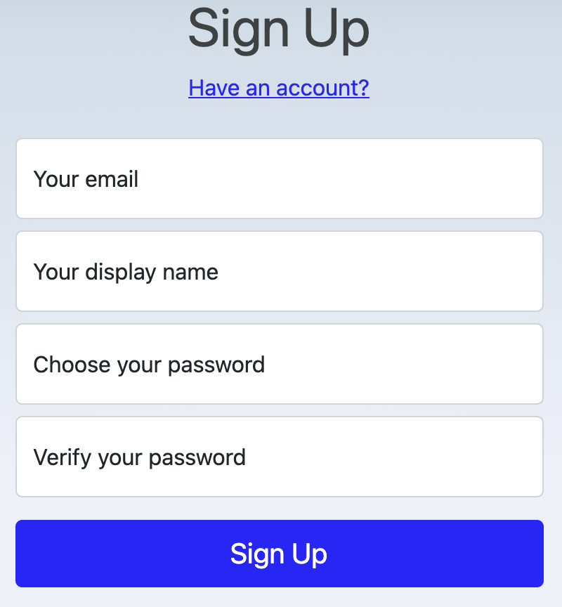

欢迎使用 MetatoCome
MetatoCome 是一个超自动化服务平台，向企业客户同时提供 PaaS 和 SaaS 服务。
Hypeautomation is one top trend on the Gartner Top Strategic Technology Trends for 2022. 超自动化出现在 Gartner 2022 Top Strategic Technology Trends 中，
Hyperautomation Hyperautomation is a business-driven, disciplined approach that organizations use to rapidly identify, vet and automate as many business and IT processes as possible.
https://www.gartner.com/en/information-technology/glossary/hyperautomation
Gartner 将超自动化定义为: 一种业务驱动的、规范的方法，组织使用它来快速识别、审查和自动化尽可能多的业务和 IT 流程。
Metatocome 支持把工作人员和 IT 系统一起协调调度起来，它不仅提供完整的工作流功能从而可以像使用传统工作流系统一样使用它，更提供一个现代化的超级自动化平台，从而可以被用于自动化企业内部一切可以自动化的工作或系统，包括人的工作，IT 系统的工作，生产、设计、交付流程、神笔包括机器人、AI 系统等，通过 Metatocome 作为中枢神经系统，把企业的运作以规范化的方式协调统一起来运行。
基本概念
作为全功能的 HyperAutomation 超自动化平台，MTC 向企业客户不同角色的用户提供 全面的功能界面、管理界面及功能接口。
- 向管理员提供全面的人员管理、流程设计、流程管理功能；
- 向用户提供全面的流程操作界面，流程设计同时向管理员和用户开放使用；
- 向应用开发者提供 PaaS 服务接口, 开发者可以开发自己的业务驱动的应用，支持几乎所有现代开发语言，可开发自己的 iOS、Android APP、 H5、小程序 及桌面应用, 在这些应用中提供工作流启动、工作任务检查等流程任务工作；
- 向集成开发者提供接口及流程数据，从而可以双向打通企业内部其它 IT 系统、生产系统等；
- 向流程开发者开放 ProcessHub，流程开发者分享行业领域流程设计，支持通过流程分享获得收益；
流程启动以后，MTC 将工作分发到具体人员或具体 IT 系统中，并在工作被执行以后，根据所设定的流程逻辑，决定下一步流向，直到全部工作完成。
注册账户
MetaToCome 适用邮箱地址作为用户唯一标识，你可以适用任意正常适用的邮箱来注册 MetaToCome。同时，如果你以 MTC SaaS 服务租户企业内部员工的身份适用，请使用你的公司工作邮箱地址。
注意，你所在企业的管理员可能可能采用一次性导入用户账号的方式来为你建立账户，你只需从管理员处拿到账号和密码，即可使用 MTC。
注册时的界面

显示名至少有 3 个字符以上，最多 12 个字符，不论是英文还是中文
密码长度介于 6-12 之间，必须以字母开头，并且必须包含至少一个特殊字符： !@#$%&*
组织员工
组织员工的账号，一般由组织管理员统一导入，无须每个员工单独注册。如果导入时该员工的账号已经存在，则该员工会在平台内收到一个加入组织的邀请
管理员身份
升级到组织账户
管理员在用自己邮箱完成账号注册以后，缺省情况下以独立账号方式存在，只须向平台申请，将独立账号升级为组织账号，即可成为相应组织的管理员。
管理员拥有组织级的管理员权限，请直接在设置界面查看。点击账户设置按钮即可进入设置界面，设置按钮通常位于屏幕左上方个人头像处。
只有组织账户才能使用 MTC 的全部功能。
升级到组织账户，可以联系平台或 MTC 的代理机构
管理员权限
组织管理员的组名称为“ADMIN”，管理员可以把其他人加到管理员组。
管理员拥有更高的权限，例如直接修改或删除普通用户的流程